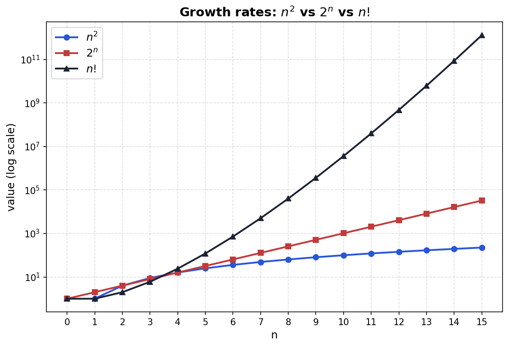
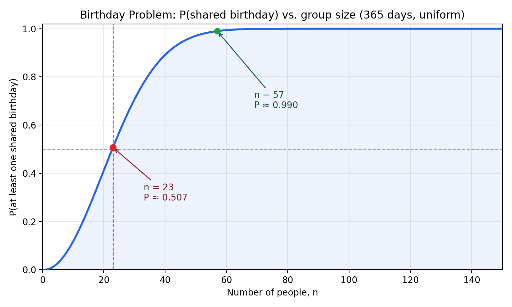

Contents
- Combinatorics: Core Tools
- Multiplication rule, permutations, factorial
- Repeated elements (CAT, BOB, MISSISSIPPI)
- Binomial coefficient \(\binom{n}{k}\)
- Sampling Table
- Order vs. replacement — four counting scenarios
- Stars-and-bars
- Story Proofs
- \(\binom{n}{k}=\binom{n}{n-k}\), \(\sum_k\binom{n}{k}=2^n\), Pascal’s rule
- Combinatorics in Probability
- Selecting groups, poker hands, random walks, birthday problem
Combinatorics
Combinatorics is the branch of mathematics concerned with counting: determining the number of ways objects can be selected, arranged, or grouped according to a given set of rules — without necessarily listing every possibility one by one.
- For us, combinatorics is the toolbox for computing \(|E|\) and \(|S|\) in the naive definition of probability, once listing outcomes by hand (as we did for \(A_3\)) stops being practical.
The Multiplication Rule
If an experiment consists of \(k\) stages, where stage 1 has \(n_1\) possible outcomes, stage 2 has \(n_2\) possible outcomes (regardless of what happened at stage 1), …, and stage \(k\) has \(n_k\) possible outcomes, then the total number of outcomes of the combined experiment is \[n_1 \times n_2 \times \cdots \times n_k\]
Applying it to two dice: stage 1 = first die (6 outcomes), stage 2 = second die (6 outcomes, regardless of what the first die showed). So \[|S| = 6 \times 6 = 36,\] matching what we counted directly earlier.
Illustrating \(2\times2\) as a tree — two coin tosses. Every path from root to leaf is one outcome:
\(2 \times 2 = 4\): matches the sample space \(S = \{HH, HT, TH, TT\}\) from our very first coin-toss example.
Choosing Courses. There are 5 math courses and 6 economics courses on offer.
You must choose one math course and one economics course. In how many ways can you do this?
Now suppose instead you must choose two math courses (out of the 5) and two economics courses (out of the 6). In how many ways can you do this?
Solving (a): two independent stages — pick the math course, then the econ course — so by the multiplication rule: \[5 \times 6 = 30 \text{ ways}\]
Part (b) is harder: the multiplication rule doesn’t directly tell us how many ways to choose 2 courses out of 5, since order doesn’t matter and we haven’t yet built a tool for “choosing a subset” as opposed to “filling ordered stages.” We’ll come back to this once we have that tool.
Permutations
- Suppose we want to line up \(n\) people in \(n\) positions (position 1, position 2, …, position \(n\)).
- This is a \(n\)-stage experiment, so the multiplication rule applies — but with a twist compared to the dice and coins examples: the number of choices shrinks at each stage, because whoever fills an earlier position is no longer available for a later one.
| Position | Who’s available | Number of choices |
|---|---|---|
| 1st | all \(n\) people | \(n\) |
| 2nd | anyone except the person already placed | \(n-1\) |
| 3rd | anyone except the two already placed | \(n-2\) |
| \(\vdots\) | \(\vdots\) | \(\vdots\) |
| \(n\)-th (last) | only one person left | \(1\) |
- By the multiplication rule, the total number of ways to arrange all \(n\) people is \[n \times (n-1) \times (n-2) \times \cdots \times 2 \times 1\]
Concrete example: 4 people (A, B, C, D) in a line.
- Position 1: 4 choices. Position 2: 3 choices (one person used). Position 3: 2 choices. Position 4: 1 choice (whoever’s left).
- Total arrangements: \(4 \times 3 \times 2 \times 1 = 24\).
With two dice (or two coin tosses), every stage had the same full set of choices available, because the outcome of the first roll doesn’t remove any option from the second. Here, each position uses up one of the available people, so the pool shrinks — the multiplication rule still applies, but the factors decrease: \(n, n-1, n-2, \dots, 1\) instead of \(n, n, n, \dots, n\).
For a positive integer \(n\), define \[n! = n \times (n-1) \times (n-2) \times \cdots \times 2 \times 1\] By convention, \(0! = 1\).

\(n!\) is the number of permutations of \(n\) distinct objects — that is, the number of different ways to arrange all \(n\) of them in a sequence (a line, an order, a ranking, …).
How many words can you make by rearranging the letters of “CAT”?
- 6 words: CAT, CTA, TCA, ATC, TAC, ACT
- How to count them systematically?
- All three letters are distinct, imagine each as a person.
- So this is exactly the “\(n\) people in a line” problem: \(3! = 6\) arrangements.
- Simple: we reduced the new problem to a previously solved one!
How about BOB?
- Naive instinct: 3 letters, so \(3! = 6\) arrangements?
- But we have only: BOB, BBO, OBB.
- Our approach fails because the two B’s are indistinguishable — we can’t treat them as distinct people. When they switch places, the word looks the same, so we are overcounting.
- Need to fix the overcount!
Fixing the overcounting:
- Temporarily label the two B’s as \(B_1\) and \(B_2\), as if they were distinguishable. Now all 3 “letters” (\(B_1, O, B_2\)) are distinct, so there are \(3! = 6\) arrangements:
- \[B_1OB_2,\; B_1B_2O,\; OB_1B_2,\; OB_2B_1,\; B_2OB_1,\; B_2B_1O\]
- Now drop the labels (i.e., stop distinguishing the B’s) and see what collapses together:
- \(B_1OB_2\) and \(B_2OB_1\) both become BOB
- \(B_1B_2O\) and \(B_2B_1O\) both become BBO
- \(OB_1B_2\) and \(OB_2B_1\) both become OBB
- Every real word shows up exactly 2 times. Why?
- Once for each way of permuting the two identical B’s.
Because each word is counted 2! times, we can fix the overcount by dividing by 2!: \[\text{# of distinct arrangements of BOB} = \frac{3!}{2!} = \frac{6}{2} = 3\]
Strategy:
- Reduce to a previously solved problem, then introduce a correction factor to account for overcounting.
- General approach for any word: \[\text{# of distinct arrangements of a word} = \frac{n!}{k_1! k_2! \cdots k_m!}\] where \(n\) is the total number of letters, and \(k_1, k_2, \dots, k_m\) are the counts of each repeated letter.
Explore it yourself.
Type any word (up to 6 letters) below. It labels every repeated letter, lists all \(n!\) labeled arrangements, and lets you click a word — or hit “highlight all clusters” — to see exactly which labeled arrangements collapse onto the same real word.
a) MISSISSIPPI has 11 letters, with multiplicities \(M{=}1\), \(I{=}4\), \(S{=}4\), \(P{=}2\) (check: \(1+4+4+2=11\) ✓). By the formula for permutations with repeated elements: \[\frac{11!}{1!\,4!\,4!\,2!} = \frac{39{,}916{,}800}{1 \times 24 \times 24 \times 2} = \frac{39{,}916{,}800}{1{,}152} = 34{,}650\]
b) Glue the four I’s into a single block, “\(\text{IIII}\)”. Now we’re arranging 8 units: \(M, \text{[IIII]}, S, S, S, S, P, P\) — that’s \(1\) M, \(1\) block, \(4\) S’s, \(2\) P’s, totaling 8 units. Same formula: \[\frac{8!}{1!\,1!\,4!\,2!} = \frac{40{,}320}{1 \times 1 \times 24 \times 2} = \frac{40{,}320}{48} = 840\]
(Note the block itself contributes no further arrangements internally, since all four I’s are identical — there’s only \(4!/4! = 1\) way to arrange them within the block.)
Counting ones and zeros
- A binary sequence of length \(n\) is just a string of \(n\) digits, each either \(0\) or \(1\).
- How many binary sequences of length \(n\) are there?
- Each digit has 2 choices, it can be 0 or 1.
- There are \(n\) digits, so by the multiplication rule, there are \(2\times 2 \times \cdots \times 2 = 2^n\) binary sequences of length \(n\).
- How many binary sequences of length \(n\) have exactly \(k\) ones?
- For example, for \(n=3\) and \(k=2\), the sequences are: (110, 101, 011) — so there are 3 sequences.
- How to count systematically? We can reduce this to a previously solved problem.
Strategy: reduce to a previously solved problem.
- A binary sequence of length \(n\) with exactly \(k\) ones is just a string of \(n\) digits, \(k\) of which are 1’s and the remaining \(n-k\) are 0’s.
- This is exactly the same as arranging \(n\) symbols, where
- \(k\) are one type (1’s) and
- \(n-k\) are another type (0’s).
- We already solved this problem in the “distinct arrangements of a word” section — the answer is \[\frac{n!}{k!\,(n-k)!}\]
Choosing a team
From a group of \(130\) people, how many different teams of size \(5\) can be formed? (Order within the team doesn’t matter — a team is just a subset of people.)
Again simplify the numbers to count manually
- Take: \(n=3\), \(k=2\). Let people be \(A, B, C\).
- Count by hand: \(\{\{A,B\}, \{A,C\}, \{B,C\}\}\), so there are 3 teams.
- To count systematically, notice that we must decide for each person whether they’re on the team or not.
Strategy: encoding to reduce to previously solved problem.
- Line up all \(n\) people in a fixed order.
- For any team, write \(1\) under each person who’s on the team and \(0\) under each person who isn’t.
- This turns every team into a binary sequence of length \(n\) — and every binary sequence of length \(n\) decodes back into exactly one team.
- So teams and binary sequences are in one-to-one and onto correspondence (bijection).
- If we know how to count the binary sequences, we know how to count the teams!
| Team | \(A\) | \(B\) | \(C\) |
|---|---|---|---|
| \(\{A,B\}\) | \(1\) | \(1\) | \(0\) |
| \(\{A,C\}\) | \(1\) | \(0\) | \(1\) |
| \(\{B,C\}\) | \(0\) | \(1\) | \(1\) |
From a group of \(130\) people, how many different teams of size \(5\) can be formed? (Order within the team doesn’t matter — a team is just a subset of people.)
- By the encoding argument, this is the same as counting binary sequences of length \(130\) with exactly \(5\) ones.
- By the formula we derived earlier, the answer is \[\frac{130!}{5! 125!} = \frac{130 \times 129 \times 128 \times 127 \times 126}{5 \times 4 \times 3 \times 2 \times 1} = 2{,}421{,}303{,}200\]
- So there are over 2 billion different teams of size 5 that can be formed from 130 people!
- General formula: the number of teams of size \(k\) from a group of \(n\) people is \[\frac{n!}{k!\,(n-k)!}\]
A function \(f: A \to B\) is a bijection if it pairs up every element of \(A\) with exactly one element of \(B\), and every element of \(B\) is paired with exactly one element of \(A\) — nothing on either side is left out or used twice.
Our encoding creates a bijection between the set of teams of size \(k\) from \(n\) people and the set of binary sequences of length \(n\) with exactly \(k\) ones.
If a bijection exists between two finite sets \(A\) and \(B\), then \(|A| = |B|\).
So to count a set that’s awkward to count directly, it’s enough to find any bijection between it and a set we already know how to count.
For integers \(n \geq 0\) and \(0 \leq k \leq n\), the binomial coefficient is \[\binom{n}{k} = \frac{n!}{k!\,(n-k)!}\] Read aloud as “\(n\) choose \(k\).”
\(\binom{n}{k}\) is the number of ways to choose a subset of size \(k\) from a set of \(n\) distinct objects. Everything we’ve built up to now is really the same quantity in disguise:
- the number of teams of size \(k\) from \(n\) people,
- the number of binary sequences of length \(n\) with exactly \(k\) ones (or, equivalently, \(k\) zeros),
- the number of distinct arrangements of \(n\) symbols where \(k\) are one type and \(n-k\) are another.
Revisiting: Choosing Courses
Recall the earlier problem: 5 math courses, 6 econ courses. Now let’s redo it with the binomial coefficient formally in hand — including part (b), which we set aside in Example 2.
Choose 1 math course and 1 econ course. In how many ways?
Choose 2 math courses and 2 econ courses. In how many ways?
To solve the problem, break it into parts:
Choosing 2 out of 5 (math courses): \[\binom{5}{2} = \frac{5!}{2!\,3!} = \frac{120}{2 \times 6} = 10\]
Choosing 2 out of 6 (econ courses): \[\binom{6}{2} = \frac{6!}{2!\,4!} = \frac{720}{2 \times 24} = 15\]
Combine the two independent stages using the multiplication rule: \[\binom{5}{2} \times \binom{6}{2} = 10 \times 15 = 150\]
Count by hand with small numbers first to understand the problem. Before reaching for a general formula, work out a tiny concrete case explicitly (two dice summing to 3, BOB’s three arrangements, 3 people choosing a team of 2). This builds the intuition the formula is supposed to capture, and gives you a number to check the formula against once you have it.
Reduce to a problem you already know how to solve. Look for a way to reframe an unfamiliar problem as one you’ve already solved — either by temporarily simplifying an assumption (pretend BOB’s two B’s are distinguishable, solve the easy “all distinct” version, then correct for the overcounting) or by encoding it as a different but equivalent object (a team of people ↔︎ a binary sequence).
Break a complex problem into independent stages, and multiply. Whenever a choice splits into a sequence of smaller decisions — each with its own count of options, regardless of the others — the multiplication rule turns the whole problem into a product of easy pieces (two dice, two coin tosses, or “choose the math courses, then choose the econ courses”).
General approach
To recognize when differently sounding problems have the same combinatorial structure, it is useful to keep in mind the following general framework for counting:
- Imagine we are choosing (sampling) \(k\) objects from a set of \(n\) distinct objects, one by one. There are two key questions to ask:
- Order: does the order of selection matter?
- Replacement: do we choose with or without replacement? (can we choose the same object more than once?)
- We want to count how many choices we have in each of the four resulting scenarios.
Sampling Table
| Order matters | Order doesn’t matter | |
|---|---|---|
| With replacement | ||
| Without replacement |
How many ways are there to distribute certain medals to a class of \(n\) students?
- Math and Econ medal
- Gold and Silver Math medals (must give one per person)
- Two Math medals (must give at most one per person)
- Two Math medals (can give more than one per person)
Which corner of the sampling table does each scenario belong to?
Problems
- Math and Econ medal
- Gold and Silver medals
- Two Math medals
- Two Math medals — can give more than one to the same person
Categories
- Without replacement, unordered
- With replacement, ordered
- With replacement, unordered
- Without replacement, ordered
Math and Econ medals
- Imaging distributing the medals one by one, first chosen student gets Math, second gets Econ
- \(n\) choices for Math
- \(n\) choices for Econ
- combine the two: \[n^2\]
- Here order matters (first got gold, second got silver)
- and we choose with replacement since the same student can be chosen twice.
- Generally, \(n\) students and \(k\) distinct medals: \[n^k.\]
| Order matters | Order doesn’t matter | |
|---|---|---|
| With replacement | Math and Econ medals, \(n^k\) | |
| Without replacement |
Gold and Silver Math medals (must give one per person)
- Imaging distributing the medals one by one, first chosen student gets Gold, second gets Silver
- \(n\) choices for Gold
- but \(n-1\) choices for Silver
- combine the two: \[n(n-1)=\frac{n!}{(n-2)!}\]
- Here order matters (first got gold, second got silver)
- and we choose without replacement since the same student cannot be chosen twice.
- Generally, \(n\) students and \(k\) distinct medals: \[\frac{n!}{(n-k)!}.\]
| Order matters | Order doesn’t matter | |
|---|---|---|
| With replacement | \(n^k\) | |
| Without replacement | \(\dfrac{n!}{(n-k)!}\) |
Two Math Medals (at most one per person)
- Same setup, but the two medals are identical.
- This is the same as choosing a team of 2 out of \(n\) people, hence \[\binom{n}{2}\]
- Here order doesn’t matter (the two medals are indistinguishable)
- and we choose without replacement (same student can’t get both).
- Generally, \(n\) students and \(k\) identical medals: \[\binom{n}{k} = \frac{n!}{k!(n-k)!}.\]
| Order matters | Order doesn’t matter | |
|---|---|---|
| With replacement | \(n^k\) | |
| Without replacement | \(\dfrac{n!}{(n-k)!}\) | \(\dbinom{n}{k}\) |
Two Math Medals, Repetition Allowed
- Simplify - three students — Alice, Bob, Carol
- A student may receive 0, 1, or both.
| # | Alice | Bob | Carol |
|---|---|---|---|
| 1 | •• | ||
| 2 | •• | ||
| 3 | •• | ||
| 4 | • | • | |
| 5 | • | • | |
| 6 | • | • |
6 ways to distribute 2 identical medals among 3 students.
Strategy: encoding
Two dividers split the row into 3 groups (Alice | Bob | Carol); two dots mark the medals. Reading left to right: let 0 = a medal, 1 = a divider.
| # | Alice | Bob | Carol | Encoding |
|---|---|---|---|---|
| 1 | •• | \(0\,0\,1\,1\) | ||
| 2 | •• | \(1\,0\,0\,1\) | ||
| 3 | •• | \(1\,1\,0\,0\) | ||
| 4 | • | • | \(0\,1\,0\,1\) | |
| 5 | • | • | \(0\,1\,1\,0\) | |
| 6 | • | • | \(1\,0\,1\,0\) |
| # | Alice | Bob | Carol | Encoding |
|---|---|---|---|---|
| 1 | •• | \(0\,0\,1\,1\) | ||
| 2 | •• | \(1\,0\,0\,1\) | ||
| 3 | •• | \(1\,1\,0\,0\) | ||
| 4 | • | • | \(0\,1\,0\,1\) | |
| 5 | • | • | \(0\,1\,1\,0\) | |
| 6 | • | • | \(1\,0\,1\,0\) |
Every sequence has exactly \(k=2\) zeros and \(n-1=2\) ones, laid out in \(n+k-1=4\) total slots. Choosing which \(k\) of the \(4\) positions are zeros fixes the whole sequence: \[\binom{n+k-1}{k} = \binom{4}{2} = 6\]
| Order matters | Order doesn’t matter | |
|---|---|---|
| With replacement | \(n^k\) | \(\dbinom{n+k-1}{k}\) |
| Without replacement | \(\dfrac{n!}{(n-k)!}\) | \(\dbinom{n}{k}\) |
Story proofs: interpret combinatorial expressions
Prove that:
\[\binom{n}{k}=\binom{n}{n-k}\]
- Algebraic proof: \(\dbinom{n}{n-k} = \dfrac{n!}{(n-k)!\,(n-(n-k))!} = \dfrac{n!}{(n-k)!\,k!} = \dbinom{n}{k}.\)
- Story proof: choosing a team of \(k\) people from \(n\) is the same as choosing which \(n-k\) people to leave out — so both sides count the number of teams of size \(k\).
The Idea Behind a Story Proof
To show \(A = B\), find a single set of objects and count it two different ways:
- one way of counting gives \(A\)
- another way of counting gives \(B\)
- since both count the same objects, \(A = B\)
No algebra required — and often more insightful, since it explains why the identity holds, not just that it holds.
Sum of Binomial Coefficients
Prove that: \[\sum_{k=0}^{n} \binom{n}{k} = \binom{n}{0}+\binom{n}{1}+\ldots+\binom{n}{n} \overset{?}{=} 2^n\]
- Algebraic proof: ????
- Story proof: both sides count the number of binary sequences of length \(n\).
\[\binom{n}{0}+\binom{n}{1}+\ldots+\binom{n}{n}\]
- Number of sequences with only 0’s (\(k=0\) ones): \(\binom{n}{0}\)
- Number of sequences with exactly one 1 (\(k=1\)): \(\binom{n}{1}\)
- Number of sequences with exactly two 1’s (\(k=2\)): \(\binom{n}{2}\)
- \(\vdots\)
- Number of sequences with only 1’s (\(k=n\)): \(\binom{n}{n}\)
- Every sequence has some number of 1’s between \(0\) and \(n\), and no sequence is counted twice — so summing over \(k\) counts every sequence exactly once: \[\sum_{k=0}^n \binom{n}{k} = \underbrace{2^n}_{\text{total sequences}}\]
Give a story proof of Pascal’s rule: for \(1 \le k \le n\), \[\binom{n}{k} = \binom{n-1}{k-1} + \binom{n-1}{k}.\]
Hint: consider choosing a committee of size \(k\) from \(n\) people, one of whom is Nurlan. Split into cases based on whether Nurlan is on the committee.
Give a story proof that, for \(1 \le k \le n\), \[k\binom{n}{k} = n\binom{n-1}{k-1}.\]
Hint: consider choosing a committee of size \(k\) from \(n\) people, one of whom will be designated chair. Count the possibilities two ways: chair first vs. committee first.
Combinatorics in probability calculations
- Naive definition = counting
- If the problem fits the naive definition (typically some symmetry), start by recalling the formula first: \[P(A)=\frac{|A|}{|S|}.\]
- Usually \(|S|\) is easy, start counting first.
- \(A\) is always a subset of \(S\), count it next (typically a hard part)
Problem 1:
- Class has 70 girls and 60 boys
- Randomnly choose 5 people (what does it mean randomly?)
- What is the probability that all 5 chosen are girls?
Approach 1 — unordered sample space (combinations)
- Randomly: experiment where a group of 5 people is chosen such that each possible 5-people group is equally likely to be chosen.
- Sample space: all ways to pick 5 people group out of 130:
- Choosing when order does not matter, without replacement — \(\binom{130}{5}\) equally likely outcomes.
- Event A: all ways to pick 5 people from the 70 girls — \(\binom{70}{5}\).
- \[P(A) = \frac{\binom{70}{5}}{\binom{130}{5}} = \approx 0.042282\]
Approach 2 — ordered sample space (permutations)
- Randomly: experiment where where a line is form of 5 people such that each possible 5-people line is equally likely to be formed.
- Sample space: all ways to line up 5 people out of 130:
- Order matters, without replacement — \(130\cdot129\cdot128\cdot127\cdot126\) equally likely outcomes.
- Event A: all 5 people in a line come from the 70 girls — \(70\cdot69\cdot68\cdot67\cdot66\).
- \[P(A) = \frac{70\cdot69\cdot68\cdot67\cdot66}{130\cdot129\cdot128\cdot127\cdot126} = \approx 0.042282\]
Same answer either way — imposing an order on selection multiplies both numerator and favorable count by the same \(5!\), so it cancels out of the ratio.
Problem 2: A 5-card hand is dealt from a standard 52-card deck (13 ranks, 4 suites).
- What is the probability the hand contains exactly two pairs — two cards of one rank, two of another rank, and one card of a third, different rank?

- Experiment: choosing a 5-card hand, so that all hands are equally likely to be chosen.
- First count the sample space S, all possible hands: \[\binom{52}{5}=2598960\]
- Then count event A: how many hands out of 2598960 are such that they contain exactly two pairs.
The event “two pairs”:
- A hand of “two pair” has 3 distinct ranks involved: two ranks contribute 2 cards each (the pairs), one rank contributes 1 card. Total: \(2+2+1=5\) cards.
- The deck has \(13\) ranks, each with \(4\) suits.
- We build the hand in 4 independent choices:
- Which 2 ranks form the pairs: \(\binom{13}{2}\)
- Which 2 suits for each of those ranks (2 out of 4 suits per rank, chosen independently for each of the 2 pair-ranks): \(\binom{4}{2}\) each, so \(\binom{4}{2}^2\)
- Which rank the 5th card comes from — must differ from the 2 pair-ranks, so \(11\) remaining choices: \(\binom{11}{1}\)
- Which suit for that 5th card: \(\binom{4}{1}\)
:::
The event “two pairs”:
\[\binom{13}{2}\binom{4}{2}^2\binom{11}{1}\binom{4}{1} = 78 \cdot 36 \cdot 11 \cdot 4 = 123{,}552\]
and combine:
\[P(\text{two pair}) = \frac{123{,}552}{\binom{52}{5}} = \frac{123{,}552}{2{,}598{,}960} \approx 0.0475\]
Problem: random binary price movement:
Shares of a company start at price $100 and follow a simple law of movement: each day, the price randomly moves up $1 or down $1.
- What is the probability the in 10 days the price will stay the same (Event \(A_{100}\))?
- What is the probability the in 10 days the price will be greater or equal to $105 (Event \(A_{\geq 105})\)?
Random Binary Price Walk
Start price = 100. Each of 10 steps: +1 tick or −1 tick, equally likely, independent of the past.
The right-hand panel accumulates the final (step-10) price of every trajectory drawn so far. As trajectories pile up, its shape converges to Binomial(10, ½) shifted to a mean of 100 —.
- Price trajectory lists price movement per each of the days: a sequence of 10 letters, for example \((U, U, \dots, U)\).
- Experiment: a price trajectory is chosen at random such that each possible price trajectory is equally likely.
- Sample space: all possible trajectories, \[2^{10}\]
- Event \(A_x\): trajectory results in price \(x\).
- Event \(A_{100}\) occurs if and only if
- Ups-Downs=0 or Ups-(10-Ups)=0, hence Ups=5.
- in other words price went up 5 times and went down 5 times.
- It does not matter when the price went up or down, just total number of ups.
- Hence to count \(|A_{100}|\) we need to count all sequences with exactly 5 ups: \(\binom{10}{5}\)
- Putting together: \[P(A_{100})=\frac{\binom{10}{5}}{2^{10}}\approx 0.25 \]
- Event \(A_{\geq105}\) occurs if and only if
- Ups-Downs \(\geq 5\), hence Ups \(\geq\) 7.5.
- It does not matter when the price went up or down, just total number of ups must be 8 or more.
- Hence to count \(|A_{\geq105}|\) we need to count all trajectories with exactly 8, 9, or 10 ups: \[\binom{10}{8}, \binom{10}{9}, \binom{10}{10}\]
- Putting together: \[P(A_{\geq105})=\frac{\binom{10}{8}+ \binom{10}{9}+\binom{10}{10}}{2^{10}}\approx 0.05 \]
Practice Question
For the same random walk as the widget on the previous slide (\(n=10\) steps, starting at 100, each step \(+1\) or \(-1\) equally likely): compute the probability of every possible final price. There are 11 reachable values.
| Final price | 90 | 92 | 94 | 96 | 98 | 100 | 102 | 104 | 106 | 108 | 110 |
|---|---|---|---|---|---|---|---|---|---|---|---|
| \(P(\text{price})\) |
Birthday problem
- There are 130 students
- What is the probability that at least two students born on the same day?
- Assumption: being born on any date is equally likely, 365 days in a year.
- Outcome: a birthday sequence records a birth date for each person.
- Experiment: a random birthday sequence is chosen, with all sequences equally likely. How many are there?
- \[|S|=365^{130}\]
- Event A: a birthday sequence contains at least two same dates.
We need to count how many birthday sequences are in A.
- All sequences either contain at least two same dates or do not contain same dates (all are born on different days).
- It is easier to count the latter here!
- In set notation \[S=A\cup A^c\]
- So, \(|S|=|A|+|A^c|\), that is \[|A|=|S|-|A^c|\]
- Hence, by naive definition \[P(A)=1-\frac{|A^c|}{|S|}\]
How many sequences do not contain repeated dates?
Lets choose a birthday sequence person by person: - 365 choices for first student - 364 choices for second student - 363 choices for third student - … - 365-129=236 choices for the 130th student - Combining: \[|A^c|=365\times364\times\dots\times 236\]
Applying naive definition:
\[P(A)=1-\frac{365\times364\times\dots\times 236}{365^{130}}\approx 0.99999999999624\]

- Naive definition = way to assign probabilities to outcomes of an experiment.
- But many experiments we care about have assymetric outcomes, so naive approach does not apply.
- We want to be able to think about any experiment, so should have a way to assign any nonequal probabilities to outcomes.
- For example: model a “biased” coin which has nonequal probabilities of Heads and Tails.
How to model Biased coin?
- Can simply assume that \(P(H)=0.8\)
- But of course this restricts the probability of T:
- \(P(T)=0.2\) since only two outcomes and we define probabity \(P(T)\) to be long run proportion of T, and hence probabilities of all outcomes must sum to 1 by definition of probability.
- So, it would make no sense to assume \(P(H)=0.8\) and \(P(T)=0.5\).
- The assumed probabilities must satisfy some constraints for our probability model to make sense.
A probability space consists of:
- a sample space \(S\) (the set of all possible outcomes), and
- a probability function \(P\) that takes an event \(A \subseteq S\) and returns a real number \(P(A) \in [0,1]\),
satisfying two axioms:
- \(P(\emptyset) = 0, \quad P(S) = 1\).
- If \(A_1, A_2, \dots\) are disjoint (\(A_i \cap A_j = \emptyset\) for \(i \ne j\)), then \[P\left(\bigcup_{j=1}^{\infty} A_j\right) = \sum_{j=1}^{\infty} P(A_j).\]
- Any \(P\) satisfying these axioms is a valid probability function — the axioms say nothing about whether \((S,P)\) correctly describes reality:
- Every problem in this course fixes a probability space \((S,P)\) for some experiment:
- \(S\) is suggested by the problem
- \(P\) is not given in full: we’re told some probabilities, or properties, and must derive the rest.
- This is the game for most of the semester: given partial information about \(P\), use the axioms to find what’s asked.
- Later: what if we don’t know \(P\) at all — only data generated by it? \(\to\) statistics.
- Naive: assuming that every outcome in \(S\) has the same probability \(1/|S|\).
- General: outcomes can have different probabilities — non-negative, summing to 1.
Example: Tossing two Fair coins
How do we build a probability model of this experiment?
- Sample space: \(\{HH, HT, TH, TT\}\)
- ordered: because coins are “physically” distinguishable (give names to coins, flip sequentially)
- outcomes are physically symmetric because different sides of the coins are not really different, just called differently, and the two tosses don’t influence each other
- Assume that naive definition applies.
- Find probability of each outcome in \(S\).
Example: Tossing two Magic coins
Now we want our experiment to have some special properties.
- Sample space: \(\{HH, HT, TH, TT\}\)
- still ordered
- no longer symmetric (magic coins behave in a magical way!)
- Naive no longer applies. We specify some probabilities instead:
- Probability that the first toss is H is 1/2.
- Probability that the second toss is H is 1/2.
- Probabilty of TT is 0.
- Find probability of each outcome in \(S\).
Properties of probability
From the axioms we can derive the following properties which apply to any events \(A, B \subseteq S\):
- \(P(A^c) = 1 - P(A)\) (complement)
- If \(A \subseteq B\), then \(P(A) \le P(B)\) (monotonicity)
- \(P(A \cup B) = P(A) + P(B) - P(A \cap B)\)
Take a look at formal derivation of these in the book.
Compute complement
Throw dice 3 times. What is the probability that at least one 6 appears (A)?
- Event A is compex, consisting of outcomes with exactly one 6, two 6’s, and three 6’s. So, to count directly, we need to count one by one:
- one 6: \(\binom{3}{1}5^2\)
- two 6’s: \(\binom{3}{2}5\)
- three 6’s: \(\binom{3}{3}\)
- Total outcomes: \[|A|=\binom{3}{1}5^2+\binom{3}{2}5+\binom{3}{3}=91\]
Compute complement
Throw dice 3 times. What is the probability that at least one 6 appears (event A)?
\[P(A)=\frac{91}{6^3}\approx 0.42\]
- But \(A^c\) is a simpler event – no 6’s at all. Easy to count:
- \(5^3\) outcomes (drop 6 out of the feasible choices)
- \[P(A)=1-P(A^c)=1-\frac{5^3}{6^3}=\frac{91}{6^3}\approx 0.42\]
Monotonicity to bound the probabilities
Throw 3 dice. Find a lower bound on the probability that the sum is greater or equal to 8 (event B).
- Probability of Event B is harder to compute since there are many cases:
- Complement does not help since it also consists of many cases.
- Notice that if A happens, then the lowest possible sum is 8. Hence \(A\subseteq B\).
- By monotonicty we get the lower bound \(P(A)\approx 0.42 \leq P(B)\).
- The actual probability is \(P(B)\approx 0.84\).
Inclusion-Exclusion Principle
Throw three dice. What is the probability that either 6 does not appear, or 5 does not appear?
- \(E_x\) is event that number \(x\) does not appear.
- We look for \(P(E_5\cup E_6)\):
- \[P(E_5\cup E_6)=P(E_5)+P(E_6)-P(E_5 \cap E_6)\]
- \(P(E_5)=P(E_6)=\dfrac{5^3}{6^3}\)
- \(P(E_5 \cap E_6)=\dfrac{4^3}{6^3}\)
\[ \begin{aligned} P(E_5\cup E_6) &= \frac{5^3}{6^3}+\frac{5^3}{6^3}-\frac{4^3}{6^3}\\ &= \frac{125+125-64}{216}=\frac{186}{216}=\frac{31}{36}\approx 0.861 \end{aligned} \]
Inclusion-Exclusion Principle
Throw three dice. What is the probability that either 6 does not appear, or 5 does not appear, or 4 does not appear?
- We look for \(P(E_4\cup E_5\cup E_6)\):
- \[ \begin{aligned} P(E_4\cup E_5\cup E_6) &= P(E_4)+P(E_5)+P(E_6)\\ &\quad -P(E_4\cap E_5)-P(E_4\cap E_6)-P(E_5\cap E_6)\\ &\quad +P(E_4\cap E_5\cap E_6) \end{aligned} \]
- \(P(E_4)=P(E_5)=P(E_6)=\dfrac{5^3}{6^3}\)
- \(P(E_4\cap E_5)=P(E_4\cap E_6)=P(E_5\cap E_6)=\dfrac{4^3}{6^3}\)
- \(P(E_4\cap E_5\cap E_6)=\dfrac{3^3}{6^3}\)
\[ \begin{aligned} P(E_4\cup E_5\cup E_6) &= 3\cdot\frac{125}{216}-3\cdot\frac{64}{216}+\frac{27}{216}\\ &= \frac{375-192+27}{216}=\frac{210}{216}=\frac{35}{36}\approx 0.972 \end{aligned} \]
Problem: Four Couples in a Row
Four couples — are seated randomly in a row of 8 chairs at a wedding banquet. All \(8!\) seatings are equally likely.
- What is the probability that noone ends up sitting next to their partner?
- Experiment: seat all 8 people in a row, so that all \(8!\) orderings are equally likely.
- First count the sample space \(S\), all possible seatings: \[|S| = 8! = 40{,}320\]
- Then count event \(A\): seatings where noone is sitting next to his/her partner.
Strategy
- Formulate in terms of probability of union of some sets.
- \(A^c\) is an event when:
- at least one person sits next to partner, that is at least one couple together
- Let \(A_i\) be event that couple \(i\) together
- Then: \(A^c=A_1\cup A_2 \cup A_3 \cup A_4\)
- Now we can apply inclusion-exclusion: first find probabilities of all possible intersections, then combine
\(P(A_i)\): One Couple Together
- Fix couple \(i\). Glue them into one block: now arranging 7 units (the block + the other 6 people).
- Arrangements of the 7 units: \(7!\). Orderings inside the block: \(2\).
- \[P(A_i) = \frac{2 \cdot 7!}{8!} = \frac{2 \cdot 5040}{40320} = \frac{1}{4}\]
Fix two specific couples, say \(i\) and \(j\). Glue both into blocks.
- Now arranging 6 units: 2 blocks + the 4 people from the other two couples.
- Arrangements of the 6 units: \(6!\). Orderings inside each block: \(2\), and there are 2 blocks, so \(2^2\).
- \[P(A_i \cap A_j) = \frac{2^2 \cdot 6!}{8!} = \frac{4 \cdot 720}{40320} = \frac{1}{14}\]
Fix three specific couples. Glue all three into blocks.
- Now arranging 5 units: 3 blocks + the 2 people from the remaining couple.
- Arrangements of the 5 units: \(5!\). Orderings inside the 3 blocks: \(2^3\).
- \[P(A_i \cap A_j \cap A_k) = \frac{2^3 \cdot 5!}{8!} = \frac{8 \cdot 120}{40320} = \frac{1}{42}\]
- All four couples glued into blocks: 4 units total, nothing left ungrouped.
- Arrangements of the 4 units: \(4!\). Orderings inside each block: \(2^4\).
- \[P(A_1\cap A_2\cap A_3\cap A_4) = \frac{2^4 \cdot 4!}{8!} = \frac{16 \cdot 24}{40320} = \frac{1}{105}\]
Every specific choice of \(j\) couples gives the same probability (only \(j\) matters, not which couples) — so each level of the sum is just \(\binom{4}{j}\) copies of what we already found:
| together | count | probability |
|---|---|---|
| 1 couple | \(\binom{4}{1}=4\) | \(1/4\) |
| 2 couples | \(\binom{4}{2}=6\) | \(1/14\) |
| 3 couples | \(\binom{4}{3}=4\) | \(1/42\) |
| 4 couples | \(\binom{4}{4}=1\) | \(1/105\) |
\[P(A^c) = 4\cdot\tfrac14 - 6\cdot\tfrac{1}{14} + 4\cdot\tfrac{1}{42} - 1\cdot\tfrac{1}{105} = 1 - \tfrac37 + \tfrac{2}{21} - \tfrac{1}{105} = \frac{23}{35}\]